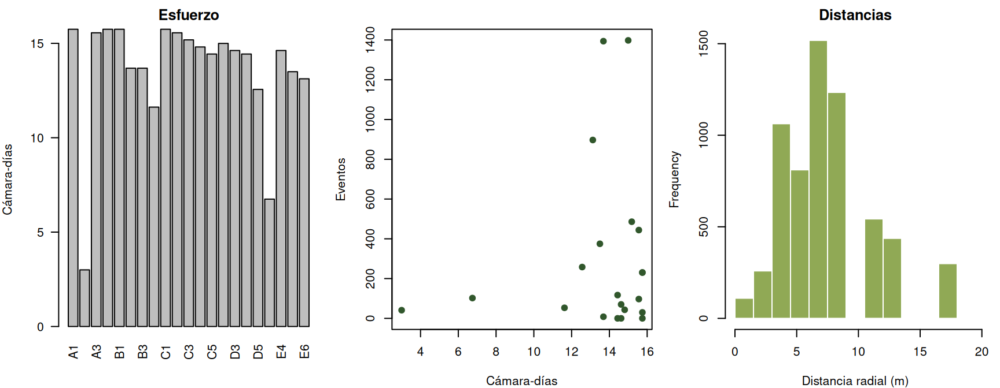
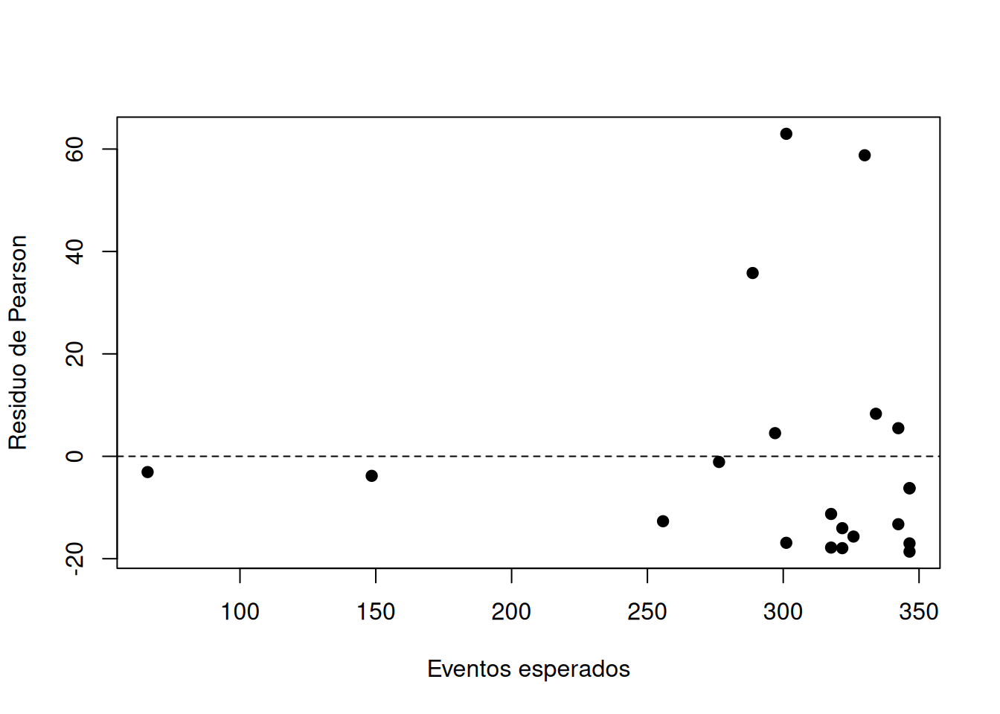

if (!requireNamespace("Distance", quietly = TRUE)) {
stop("Se requiere el paquete 'Distance' para ejecutar este capítulo.")
}
data("DuikerCameraTraps", package = "Distance")
eventos <- DuikerCameraTraps
campos <- c("Region.Label", "Area", "multiplier", "Sample.Label",
"Effort", "distance", "object")
stopifnot(all(campos %in% names(eventos)), nrow(eventos) == 6277L,
length(unique(eventos$Sample.Label)) == 21L,
all(eventos$Effort > 0),
!anyDuplicated(eventos$object[!is.na(eventos$object)]))
# Una fila sin objeto representa una estación sin evento, no una detección.
esfuerzo <- unique(eventos[c("Sample.Label", "Effort")])
stopifnot(!anyDuplicated(esfuerzo$Sample.Label))
conteos <- aggregate(!is.na(object) ~ Sample.Label, eventos, sum)
names(conteos)[2] <- "eventos"
estaciones <- merge(esfuerzo, conteos, by = "Sample.Label", all.x = TRUE)
estaciones$eventos[is.na(estaciones$eventos)] <- 0L
estaciones$dias <- estaciones$Effort * 2 / 86400
estaciones$tasa100 <- 100 * estaciones$eventos / estaciones$dias
data.frame(filas = nrow(eventos), estaciones = nrow(estaciones),
objetos = sum(!is.na(eventos$object)),
distancias_faltantes = sum(is.na(eventos$distance)),
esfuerzo_min_dias = min(estaciones$dias),
esfuerzo_max_dias = max(estaciones$dias))
#> filas estaciones objetos distancias_faltantes esfuerzo_min_dias
#> 1 6277 21 6274 3 2.999259
#> esfuerzo_max_dias
#> 1 15.746115 Métodos de censo por organismos y hábitats
Unidades, esfuerzo y límites de la observación
5.1 Del organismo observado al estimando
Un censo intenta enumerar todas las unidades de una población definida; una muestra observa solo una parte y requiere una regla de expansión. En campo, la palabra censo no elimina la observación imperfecta: pueden quedar organismos ocultos, unidades fuera del marco o registros duplicados. Antes de elegir una técnica se definen población objetivo, unidad biológica, unidad de muestreo, ventana temporal, área cubierta y variable registrada (Sutherland 2006; Henderson y Southwood 2016).
El estimando puede ser un total de individuos, densidad por hectárea, cobertura, frecuencia de parcelas ocupadas, biomasa o tasa de eventos por unidad de esfuerzo. No son intercambiables. Un registro de cámara sin identidad individual cuenta eventos; un individuo puede originar varios eventos y varios individuos pueden aparecer juntos. La inferencia nunca debe exceder lo que identifica el dato.
5.2 Organismos móviles
5.2.1 Conteos completos, parcelas, puntos y transectos
Un conteo completo es plausible para colonias visibles, nidos conspicuos o áreas pequeñas con fronteras claras. Requiere simultaneidad suficiente para evitar movimientos entre sectores, reglas contra duplicación y búsqueda que cubra todo el marco. Cuando no es viable, parcelas, puntos o transectos seleccionan unidades espaciales y producen conteos comparables (Gregg 2008).
En una muestra aleatoria simple de \(n\) unidades entre \(M\), el total puede estimarse como
\[ \widehat T=M\bar y, \]
con incertidumbre basada en la variación entre unidades y corrección por población finita cuando la fracción muestreada no es despreciable (Lohr 2022). En un diseño estratificado, cada hábitat se expande con su propio tamaño y probabilidad de inclusión. Elegir sitios por accesibilidad impide esa interpretación de diseño.
Los conteos por puntos estandarizan radio y duración; los transectos estandarizan longitud y ancho. Si el área efectiva no es conocida, el resultado es un índice. El muestreo por distancias añade distancias perpendiculares o radiales para modelar la disminución de detección, pero necesita medición correcta, ubicación inicial, independencia y detección cierta en la línea o punto según el diseño (Sutherland 2006; Manly y Navarro Alberto 2015).
5.2.2 Capturas, señales y cámaras
Trampas, redes, huellas, excretas, acústica y cámaras observan encuentros. Una tasa \(C/E\) divide eventos \(C\) por esfuerzo \(E\), por ejemplo eventos por 100 cámara-días. Es útil para comparar bajo protocolos estables, pero
\[ E(C_i)=E_i q_i A_i \]
mezcla intensidad o disponibilidad \(A_i\) con detectabilidad \(q_i\). Cambios de sendero, ángulo, cebo, estación, hábitat o funcionamiento pueden alterar \(q_i\) sin cambio poblacional. La independencia entre eventos exige una regla temporal o identidad; sin ella se estima actividad registrada, no individuos.
5.3 Organismos sésiles y hábitat
Cuadrantes y parcelas permiten densidad, frecuencia, cobertura y biomasa. La densidad cuenta individuos por área, pero falla si los módulos clonales no definen individuos. La frecuencia es la proporción de unidades donde aparece un taxón y depende del tamaño de parcela. La cobertura es la proyección ocupada y puede superar 100% si se suman estratos (Henderson y Southwood 2016).
Intercepción por puntos reduce decisiones subjetivas: la cobertura se estima como \(\widehat C=h/m\), con \(h\) contactos y \(m\) puntos. Intercepción lineal usa longitud interceptada sobre longitud total. En ambos casos importan orientación, borde, altura y definición de contacto. Parcelas permanentes mejoran precisión del cambio, pero exigen conservar ubicación y protocolo; parcelas nuevas describen mejor el estado actual si se seleccionan probabilísticamente.
Para hábitat se registran unidades físicas reproducibles: proporción de dosel, profundidad, sustrato, volumen de madera, área basal o complejidad vertical. Una clase amplia como “bosque bueno” oculta reglas y dificulta auditoría. La unidad y resolución deben corresponder al mecanismo ecológico y al estimando (Gregg 2008).
5.4 Supuestos y control de calidad
- el marco cubre la población objetivo y las probabilidades de selección se conocen cuando se expande a ella;
- la unidad biológica y el evento se reconocen sin duplicación ni falsas identificaciones;
- área, duración y esfuerzo se miden en unidades explícitas;
- las unidades aportan replicación al nivel usado para la incertidumbre;
- cierres espaciales y temporales son razonables para el parámetro nombrado;
- diferencias de observador, dispositivo y hábitat se controlan o registran;
- ceros verdaderos se distinguen de fallas, visitas omitidas y datos faltantes.
Una hoja de campo auditable conserva identificador, coordenadas, fecha y hora, observador, dispositivo, inicio y fin de funcionamiento, unidad del esfuerzo, taxonomía, regla de evento, datos originales y toda exclusión. Calibración doble, fotografías de referencia y revisitas permiten cuantificar errores de medición.
5.5 Aplicación real: eventos en estaciones de cámara
5.5.1 Procedencia, pregunta y estimando
Distance::DuikerCameraTraps distribuye observaciones de duiker de Maxwell (Philantomba maxwellii) tomadas en 2014 en el Parque Nacional Taï, Costa de Marfil. La documentación registra 21 cámaras, distancias radiales agrupadas y esfuerzo como número de intervalos de 2 segundos; el conjunto acompaña al paquete Distance (Miller et al. 2019).
La pregunta es: ¿cuál fue la tasa media de eventos registrados por 100 cámara-días y cuánta heterogeneidad hubo entre estaciones? El estimando es
\[ R=100\frac{\sum_i C_i}{\sum_i E_i}, \]
donde \(C_i\) son objetos registrados y \(E_i\) cámara-días. No se estimará abundancia ni densidad: el archivo no aporta identidad individual y este análisis no ajusta una función de detección.
5.5.2 Disponibilidad, importación y auditoría
La conversión es dimensional: intervalos \(\times 2\) segundos, divididos por 86 400 segundos/día. Los tres valores faltantes coinciden con filas sin objeto y no se imputan como distancias observadas.
5.5.3 Exploración
op <- par(mfrow = c(1, 3), mar = c(4, 4, 2, 1))
barplot(estaciones$dias, names.arg = estaciones$Sample.Label, las = 2,
ylab = "Cámara-días", main = "Esfuerzo")
plot(eventos ~ dias, estaciones, pch = 19, col = "#31572c",
xlab = "Cámara-días", ylab = "Eventos")
hist(eventos$distance[!is.na(eventos$object)], breaks = seq(0, 19.5, 1.5),
col = "#90a955", border = "white", xlab = "Distancia radial (m)",
main = "Distancias")
par(op)
summary(estaciones[c("dias", "eventos", "tasa100")])
#> dias eventos tasa100
#> Min. : 2.999 Min. : 0.0 Min. : 0.0
#> 1st Qu.:13.497 1st Qu.: 41.0 1st Qu.: 290.4
#> Median :14.621 Median : 102.0 Median : 1367.0
#> Mean :13.577 Mean : 298.8 Mean : 2187.9
#> 3rd Qu.:15.559 3rd Qu.: 375.0 3rd Qu.: 2778.5
#> Max. :15.746 Max. :1398.0 Max. :10187.0La relación conteo-esfuerzo permite detectar estaciones con exposición corta. El histograma describe los intervalos de distancia, no corrige detectabilidad ni convierte eventos en animales.
5.5.4 Estimación e incertidumbre
La estimación agregada pondera correctamente por exposición. Para incertidumbre se remuestrean estaciones completas, unidad que contiene conteo y esfuerzo; esto no supone que miles de intervalos de dos segundos sean réplicas independientes.
tasa <- with(estaciones, 100 * sum(eventos) / sum(dias))
set.seed(5051)
B <- 4000
boot_tasa <- replicate(B, {
b <- estaciones[sample.int(nrow(estaciones), replace = TRUE), ]
100 * sum(b$eventos) / sum(b$dias)
})
resultado_tasa <- data.frame(
estimando = "eventos por 100 camara-dias",
estimacion = tasa,
LI_95 = unname(quantile(boot_tasa, 0.025)),
LS_95 = unname(quantile(boot_tasa, 0.975))
)
round(resultado_tasa[-1], 2)
#> estimacion LI_95 LS_95
#> 1 2200.5 1023.57 3572.42El intervalo expresa variación entre las 21 estaciones observadas. No incorpora selección espacial desconocida, clasificación de eventos ni conversión a individuos.
5.5.5 Diagnósticos
Un modelo Poisson con offset(log(dias)) comprueba si una tasa constante describe la dispersión entre estaciones. No sustituye el estimador agregado.
ajuste_pois <- glm(eventos ~ 1 + offset(log(dias)), poisson, data = estaciones)
dispersion <- sum(residuals(ajuste_pois, type = "pearson")^2) /
df.residual(ajuste_pois)
influencia <- data.frame(
estacion = estaciones$Sample.Label,
residuo_pearson = residuals(ajuste_pois, type = "pearson"),
cooks = cooks.distance(ajuste_pois)
)
dispersion
#> [1] 569.6536
influencia[order(influencia$cooks, decreasing = TRUE), ][1:4, ]
#> estacion residuo_pearson cooks
#> 6 B2 62.98017 210.04993
#> 14 C6 58.79241 202.55073
#> 21 E6 35.79559 64.79650
#> 5 B1 -18.61433 21.43826
plot(fitted(ajuste_pois), residuals(ajuste_pois, type = "pearson"), pch = 19,
xlab = "Eventos esperados", ylab = "Residuo de Pearson")
abline(h = 0, lty = 2)
Sobredispersión indica heterogeneidad espacial, dependencia entre eventos o ambas. Por eso la incertidumbre principal se obtiene entre estaciones y no con el error Poisson que presupone eventos independientes.
5.5.6 Sensibilidad
orden <- order(estaciones$tasa100, decreasing = TRUE)
sin_mayor_tasa <- estaciones[-orden[1], ]
sin_menor_esfuerzo <- estaciones[-which.min(estaciones$dias), ]
c(principal = tasa,
sin_estacion_mayor_tasa = with(sin_mayor_tasa,
100 * sum(eventos) / sum(dias)),
sin_estacion_menor_esfuerzo = with(sin_menor_esfuerzo,
100 * sum(eventos) / sum(dias)),
media_no_ponderada = mean(estaciones$tasa100))
#> principal sin_estacion_mayor_tasa
#> 2200.500 1797.866
#> sin_estacion_menor_esfuerzo media_no_ponderada
#> 2209.361 2187.945Excluir una estación no es una regla de limpieza: muestra dependencia de unidades particulares. La media no ponderada responde a otro estimando, la tasa de una estación promedio, y da el mismo peso a exposiciones muy distintas.
5.5.7 Interpretación
La tasa resume actividad filmada durante periodos de máxima actividad incluidos en el archivo. Una estación con tasa alta puede tener más animales, mayor uso local, mejor orientación o visitas repetidas del mismo individuo. El resultado sirve para comparar protocolos equivalentes y planear esfuerzo, pero no autoriza una cifra de duikers ni una densidad del parque. El análisis reproducible registra también las versiones utilizadas:
data.frame(paquete = "Distance",
version = as.character(utils::packageVersion("Distance")),
objeto = "DuikerCameraTraps", R = R.version.string)
#> paquete version objeto R
#> 1 Distance 2.0.1 DuikerCameraTraps R version 4.5.2 (2025-10-31)5.6 Errores frecuentes
- llamar censo a una búsqueda parcial sin cuantificar cobertura;
- confundir eventos, grupos, señales e individuos;
- comparar conteos sin convertir esfuerzo a una unidad común;
- tratar submuestras o intervalos temporales como réplicas espaciales;
- omitir estaciones con cero eventos al resumir el esfuerzo;
- convertir frecuencia o cobertura en densidad;
- ajustar por distancia sin cumplir el diseño de muestreo por distancias;
- eliminar estaciones influyentes solo porque cambian el resultado;
- generalizar desde sitios accesibles como si fueran probabilísticos.
5.7 Síntesis
El método se elige después de definir organismo, hábitat, escala y estimando. Los conteos completos necesitan cobertura y reglas contra duplicación; parcelas, puntos y transectos necesitan un marco de selección; señales y dispositivos necesitan esfuerzo y un modelo explícito de lo que representa un evento. En organismos sésiles, densidad, frecuencia y cobertura responden preguntas distintas. La incertidumbre debe usar la unidad de muestreo real y toda conclusión debe separar el proceso ecológico del proceso de observación.
5.8 Actividad propuesta para el lector
Use solo las estaciones cuyo identificador comienza por A en Distance::DuikerCameraTraps, un subconjunto diferente del análisis principal. Reconstruya eventos y cámara-días desde las filas originales; verifique ceros, duplicados y unidades; estime la tasa agregada por 100 cámara-días y un intervalo por bootstrap de estaciones. Compare la tasa con las estaciones C, examine la sensibilidad a la cámara de menor esfuerzo y explique por qué la diferencia no demuestra una diferencia de abundancia entre zonas. Proponga dos metadatos de hábitat y una regla de independencia temporal que mejorarían una campaña futura.